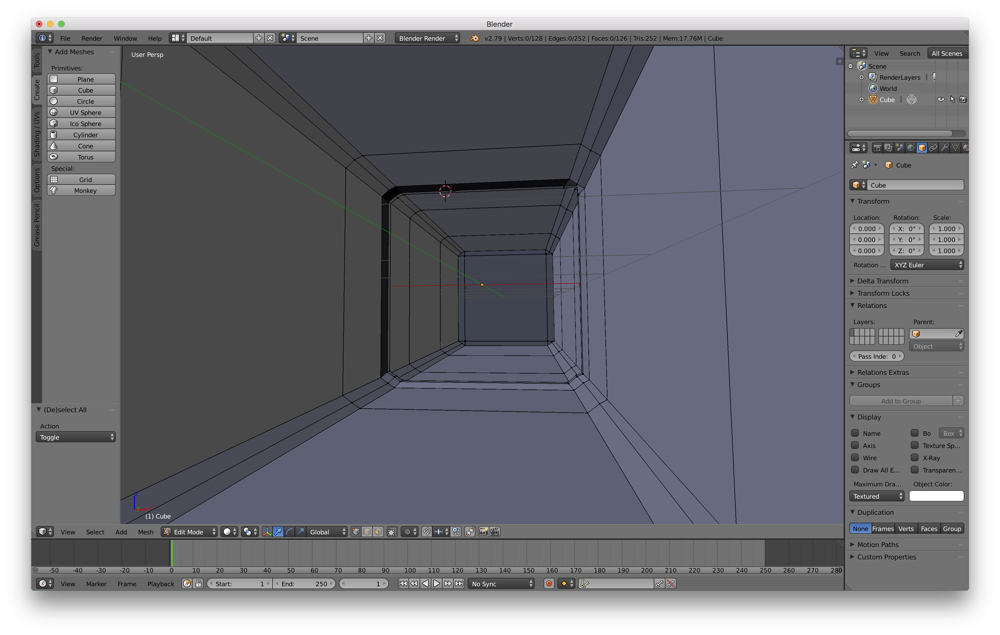

Neon Ping Pong: Overview

The picture above is the concept art of our game. We are going to make a ping pong game that is settled up in a futuristic environment. There are going to be two users competiting on their ping pong skills. But in addition to holding rackets to hit the ball, the user is also going to hold a special ability controller, and on that controller they are going to be able to use three different skills: bullet time, hide the ball as well as trigger a reverse-xy in the velocity of the ball. The whole scene will be set up in a tunnel scene and the ball can bounce when it hits the wall, floor and ceiling. Once the player failed to hit the ball, the player lose the round and another round will be started. There will also be a score counter for the two users.
Currently we are working on the network communication aspect of the game and we haven't touched any graphics yet. But we did made some models of the tunnel and rackets using blender. The picture is shown in the bottom.
